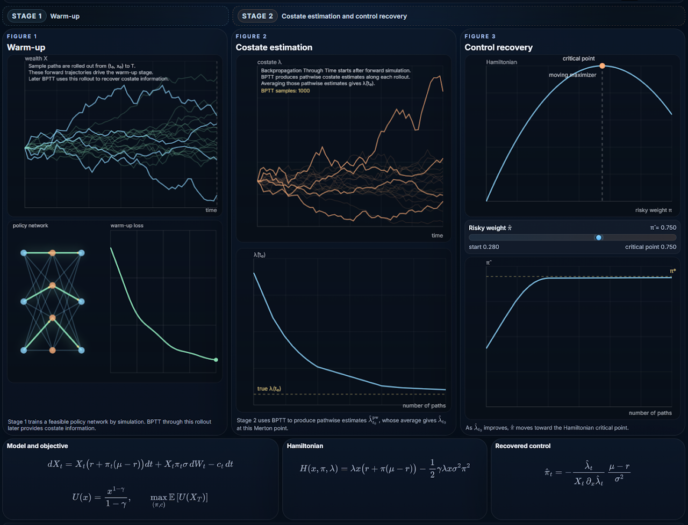
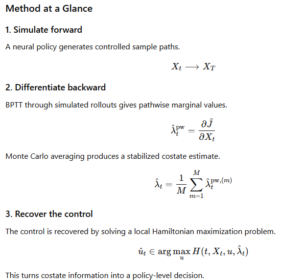

PG-DPO: Pontryagin-Guided Direct Policy Optimization
Forward simulation. BPTT costates. Hamiltonian recovery.
{kind=link}

Visual Sketch
The interactive sketch illustrates the basic PG-DPO mechanism in the Merton model.
Stage 1: Warm-up
A feasible policy network is trained by direct simulation.
Stage 2: Costate estimation
BPTT through continuation rollouts produces pathwise costate estimates.
Monte Carlo averaging stabilizes these estimates into an adjoint signal.
Stage 3: Control recovery
The estimated costate is plugged into the Hamiltonian optimality condition, recovering the control directly.
Technical note. Why does BPTT produce costates?
[Read the technical note: BPTT as a Pathwise Costate Solver]
Core Idea
Classical HJB methods provide rigorous verification, but they often suffer from the curse of dimensionality.
Deep reinforcement learning scales better, but it can lose the structural optimality conditions that make continuous-time control interpretable and reliable.
PG-DPO aims to keep both sides:
- the scalability of neural policies,
- the structural discipline of Pontryagin’s maximum principle,
- and the numerical precision of local Hamiltonian control recovery.
The central shift is simple:
Do not learn the whole value landscape first.
Learn the policy path, estimate the costate, and recover the control locally.
Why Pontryagin-Guided?
Many difficult control problems are hard not because the final policy is complex, but because the intermediate structure is delicate.
Examples include:
- high-dimensional portfolio choice,
- hard constraints,
- parameter uncertainty,
- non-Markovian or delay-driven dynamics,
- non-exponential discounting,
- and transaction costs with no-trade regions.
In these settings, global value-function learning can be unstable or unnecessarily expensive.
PG-DPO instead uses simulated rollouts and adjoint sensitivities to enforce local optimality conditions directly.
{kind=link}
